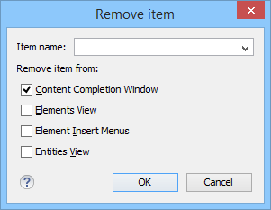

Customizing the Content Completion for a Framework
You can customize the content of the following Author controls,
adding items (which, when invoked, perform custom actions) or filtering the default
contributed ones:
- Content Completion Assistant window
- Elements view
- Insert Element menus (from the Outline view or breadcrumb contextual menus)
You can use the content completion customization support in a custom framework by following this procedure:
-
If you want to exclude a certain item from the Content
Completion proposals, you can use the
 Add button from the
Filter - Remove content completion items list. The
Remove item dialog box is displayed, allowing you to input the
item name and to choose the controls that filter it. The Item name
combo box accepts wildcards.
Add button from the
Filter - Remove content completion items list. The
Remove item dialog box is displayed, allowing you to input the
item name and to choose the controls that filter it. The Item name
combo box accepts wildcards.
Figure 3. Remove Item Dialog Box 